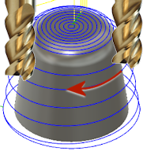
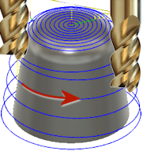
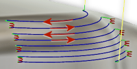

<div id="steep_and_shallow_direction"><p>材料の除去に、ダウンカット、アップカット、または両方の組み合わせのいずれを使用するかを指定します。</p>

<table class="tipTable" cellspacing="10">
<tr>
<td><center></center></td>
<td><center></center></td>
</tr><tr>
<td><center><p><b>ダウンカット</b></p></center></td>
<td><center><p><b>アップカット</b></p></center></td>
</tr></table>

<table class="tipTable" cellspacing="10">
<tr>
<td><center></center></td>
</tr><tr>
<td><center><p><b>両方向</b></p></center></td>
</tr></table>
<ul>
<li>ダウンカットは、工具がパーツに近付きます。</li>
<li>アップカットは、工具がパーツから遠ざかります。</li>
<li>両方向で、切削方向が切り替わります。</li>
</ul>
</div>